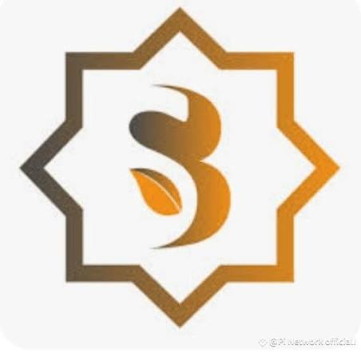

Sidra Chain (SDA) ✓
Verified-Human Financial Network, Self-Hosted EVM Blockchain & SidraSwap
What is Sidra Chain? (Origins, EVM Framework & Human Network)
Sidra Chain is a sovereign, self-hosted decentralized Layer-1 financial infrastructure designed under the fundamental mission of "One verified human. One account." Engineered to eliminate automated sybil attacks, bot-driven liquidity extraction, and fake account manipulation, Sidra deploys an identity-bound consensus model where daily minting participation is tied strictly to verified individual human beings[cite: 48, 49].
Unlike experimental mobile airdrops that run on closed mock servers, Sidra operates a fully functional self-hosted EVM blockchain[cite: 48, 49]. Its core consensus ledger utilizes double-entry cryptographic accounting, maintaining high throughput, low gas transaction finality, and complete interoperability with EVM smart contracts, decentralized finance protocols, and asset tokenization frameworks[cite: 44, 49].
Protocol Mechanics: Daily Rewards & Account Abstraction (ERC-4337)
Sidra Chain removes the friction of standard Web3 wallets by implementing next-generation smart contract architecture[cite: 48, 49]:
⚡ 1. Daily Human Ledger Claim
Participants access their account once daily to claim authenticated reward allocations. Because ledger balances reflect genuine double-entry on-chain state, balances are recorded permanently on the self-hosted network[cite: 48, 49].
🔑 2. ERC-4337 Smart-Account Wallet (No Seed Phrases)
Sidra eliminates complex 12-word seed phrases through Account Abstraction[cite: 48, 49]. Accounts feature social recovery through trusted guardians, biometric authentication, and protocol-level gasless execution[cite: 49].
💱 3. SidraSwap Decentralized Exchange (DEX)
The sovereign chain features a live native DEX (dex.sidrachain.com) supporting token swaps across ecosystem assets with multi-million SDA liquidity pools.
🏛️ 4. Tokenized Real-World Assets (L3 Layer)
Sidra's Layer-3 infrastructure supports compliant issuance of permissioned real-world assets (RWA), digital banking instruments, and logistics tokens[cite: 46, 49].
Live On-Chain Ledger Audit & Network Performance
Sidra Chain's performance is publicly verifiable in real-time through its dedicated Blockscout-powered block explorer[cite: 44, 45]:
37,062,992+ Blocks
2.0s Fast Finality
[cite: 44]44,444,812+ Txns
[cite: 44]2,456,724+ Nodes
[cite: 44]
• Native Gas Asset: SDA (Sidra Asset) settles all smart contract interactions and DEX pool swaps[cite: 44, 46].
• Network Gas Fee: Ultra-low transaction fees (~0.00004 to 0.0001 SDA per transfer)[cite: 44, 45].
• SidraSwap TVL: Over 3.81 Million SDA locked in liquidity pools across verified ecosystem assets[cite: 46].
Official Protocol Audits & Documentation
Verify blockchain transactions, live blocks, DEX liquidity pools, and smart contracts directly[cite: 44, 46]:
Proof of Personhood: Two-Step KYCPort Verification
To enforce strict anti-sybil standards and guarantee that one person commands exactly one node[cite: 48, 49]:
🛡️ KYCPort Compliance Protocol:
1. Document Validation: Participants verify identity via KYCPort (kycport.com) using government-issued National ID cards or Passports.
2. Passive Liveness Biometric Check: A browser/app interactive 3D face liveness scan proves real human existence, systematically eradicating bot farms and multiple automated accounts[cite: 49, 50, 51].
Smart Account Security & Social Recovery Hygiene
Guardian Configuration: Because Sidra accounts utilize Account Abstraction (ERC-4337), ensure you configure verified guardian emails or backup signers within your account settings[cite: 49]. This enables seamless social recovery without fear of losing physical seed phrases[cite: 48, 49].
Zero Upfront Investment: Participating in Sidra Chain ledger distribution requires zero upfront capital, zero mining equipment purchases, and zero paid subscription packages[cite: 48].
Dedicated Video Setup & KYC Walkthrough
Watch our complete video guide produced by Total Crypto Network covering registration, KYCPort verification steps, smart-account security, and SidraSwap DEX navigation: